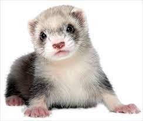

The ferret (Mustela furo) is a small, domesticated species belonging to the family Mustelidae. The ferret is most likely a domesticated form of the wild European polecat (Mustela putorius), evidenced by their interfertility. Physically, ferrets resemble other mustelids because of their long, slender bodies. Including their tail, the average length of a ferret is about 50 cm (20 in); they weigh between 0.7 and 2.0 kg (1.5 and 4.4 lb); and their fur can be black, brown, white, or a mixture of those colours. The species is sexually dimorphic, with males being considerably larger than females.
